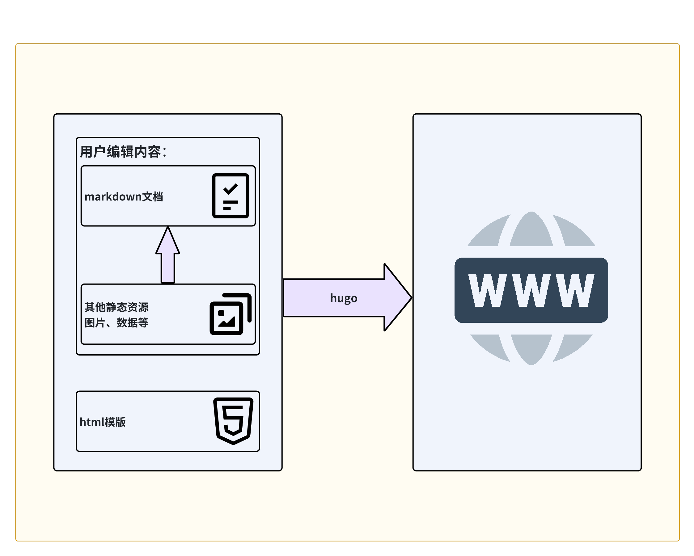

基于HUGO搭建个人静态博客
记录使用hugo如何快速搭建个人博客在本地运行，记录hugo相关内容作为日后使用及扩展做好准备。
一、HUGO
1. 简介
HUGO是基于Go编写的静态博客生成器，它能够将我们使用markdown格式写的文本内容快速的转换为HTML文档，并启动web服务，即可在浏览器中展示。
2. 感受
它吸引我的地方在于其转换的速度，等后面正式上手后，又觉得整个搭建过程很简单很流畅。最让我纠结的地方就在于选主题了，总希望能找到一个简约、清爽的主题，最后还是做了小小的妥协，先完成整个搭建流程，再多写上几篇文章之后再花时间挑选或改造也不迟。
3. 原理
一个静态博客框架，基于模版，将markdown文档转换为html文档。 
二、快速使用
参照以下几个步骤，很快便可以实现个人博客的本地服务，总体而言稍微费时的便是选择中意的主题，其次是参照主题示例（exampleSite），配置hugo.toml文件以实现个人博客的个性化配置。当搭建好了个人博客的整体的架子后，往后的工作也只需要关心内容的输出，不断的创建新的文章即可。
1. 安装hugo
基于macos的安装方式：
//执行安装命令
brew install hugo
//查看安装结果
hugo version
hugo v0.119.0-b84644c008e0dc2c4b67bd69cccf87a41a03937e
2. 创建站点
创建一个名为blog的站点：
//执行命令
hugo new site blog
3. 选择主题
在主题网址中选择一个符合自己审美的主题，简单比较了几个，确定了jane
cd blog
//初始化git 仓库
git init
//安装主题
git submodule add https://github.com/xianmin/hugo-theme-jane themes/jane
4. 修改配置
将themes/jane/exampleSite/config.toml内容复制到hugo.toml文件中，开始按需更改。
cp themes/jane/exampleSite/config.toml hugo.toml
5. 创建文章
创建第一篇属于自己的文章
//执行命令
hugo new post/title.md
可以开始专注于写内容了。 当然如果想快速看效果，也可以将themes/jane/exampleSite/content内容复制到 content目录中。
6. 查看效果
//执行命令
hugo server -D
打开网址 http://localhost:1313/ 即可查看效果
项目简介
参照上述步骤完成了博客的搭建，下面记录一下项目目录结构及关键文件的作用，方便更好的创作及整个博客主题内容的按需扩展。
tree -a -L 3
.
├── .git //git init 是生成的与文件夹，存放git版本信息。
├── .gitignore //此文件用来制定哪些文件或文件夹不受版本控制，白话点就是不想提交至git仓库点文件在这里指定，后文会用到它。
├── .gitmodules //用于管理子模块，比如主题就用到了submodules。
├── .hugo_build.lock //用于控制多个hugo实例的并发。
├── archetypes //hugo new xxx.md 依据此目录下的模板生成 xxx.md 的头部信息，像 title、date 等。
│ └── default.md
├── assets //用于存放js、css等资源。
│ └── jsconfig.json
├── config //用于设置不同环境的配置信息，像不同环境的hugo.toml，启动时需要指定环境，eg: hugo --environment staging。
│ └── staging
├── content //文章内容目录，hugo new xxx.md 生成文件的位置，创作内容存放于此。
│ ├── about.md
│ └── post
│ ├── hugo
│ └── origin.md
├── data //存放数据模版，既可以是静态数据，还可以是一些动态数据，通过URL获取。
├── hugo.toml //全局配置文件，配置整个站点信息。
├── i18n //多语言配置表，当网址支持多国语言时的变量配置。
├── layouts //存放用来将content、data等资源渲染为完整网站的模板文件。
├── public //执行hugo命令会将内容渲染为网站，网站内容便存放在public目录下即静态博客。
├── resources //存放缓存的css与images文件。
│ └── _gen
│ └── assets
├── static //存放静态资源，渲染时会将文件内容复制到public目录下。
│ ├── favicon.ico
│ ├── googleddf7a5b53f538ab8.html
│ └── images
└── themes //主题目录，可以存放一个或多个主题。
└── jane
1. content
内容创作目录，当创建文章时就是在此目录下生成相应的markdown文件，当我们的文章中需要引入一些静态文件，比如图片，也可以存放在该目录下，方便文章引用。
这里对我们有个小小的要求，就是需要掌握markdown的语法，其实也很简单，后面会考虑整理一份关于markdown语法整理的文档，便于自己快速查阅。
还有一个需要引起思考的话题就是我们在什么地方进行初次创作，然后再将内容贴到该目录下。这里可以是类似飞书文档但是需要进行一些转换，这个能否基于什么工具进行转换为markdown文件，或者直接使用markdown编辑器，像是Typora。
2. archetypes
用来定义创建文章的模板文件夹。当我们使用 hugo new xxx.md 命令时，便会依据此目录下的模板文件（default.md）生成 xxx.md 文件，此模板文件可以预定一些变量信息。
下面列举一些常用的变量：
详细参照官网内容
| 变量名 | 作用 |
|---|---|
| date | 文章创建时间 |
| description | 文章描述 |
| draft | 当设置为true时，标记为草稿内容，文章将不会显示 |
| layout | 指定文章选择的布局，否则按照默认顺序选择布局 |
| weight | 文章权重，从1开始，越小权重越大，排序越靠前 |
当我们的博客内容足够丰富时，不同类型的博客可能需要不同的模板，此时我们便可以创建除default.md以外的模板，比如我们可以在该目录下创建了一个名为post.md的模板。
当我们执行hugo new post/xxx.md时，hugo会按照以下顺序确定最终模板来创建xxx.md文件。
- archetypes/post.md
- themes/jane/archetypes/posts.md
- archetypes/default.md
- themes/jane/archetypes/default.md
如果上述几个文件都不存在，就由内置默认模版兜底。
四、常用命令
1. 添加文章
hugo new content path/title.md
2. 构建网站
在本地开发与测试阶段，需要用该命令以启动http服务，并支持热加载。
hugo server
3. 部署网站
hugo
参数：
指定 baseURL：
-b baseURL
指定环境变量：
-e env
指定主题：
-t theme
编译草稿文章（draft:true）：
-D
编译已过期文章（expiryDate < now）：
-E
编译未来发布文章（publishDate > now）：
-F
五、尾注
这篇文章与我而言其价值在于，先简单记录了基于hugo搭建博客的流程，基于此流程可以更加快速的完成博客的搭建。其次整理了hugo的目录结构，让我对hugo的功能边界及其原理有了初步的认识，为日后能够舒服的使用hugo埋下伏笔，更为日后改善博客主题样式做好了铺垫。当然，我很满意它的构建速度，也想在未来的时候能够去扩展，丰富我的个人博客。希望能够不负当初的愿望，真正实现帮助我学习提升。
下一篇内容，计划是梳理关于如何将个人博客部署到网站托管平台。